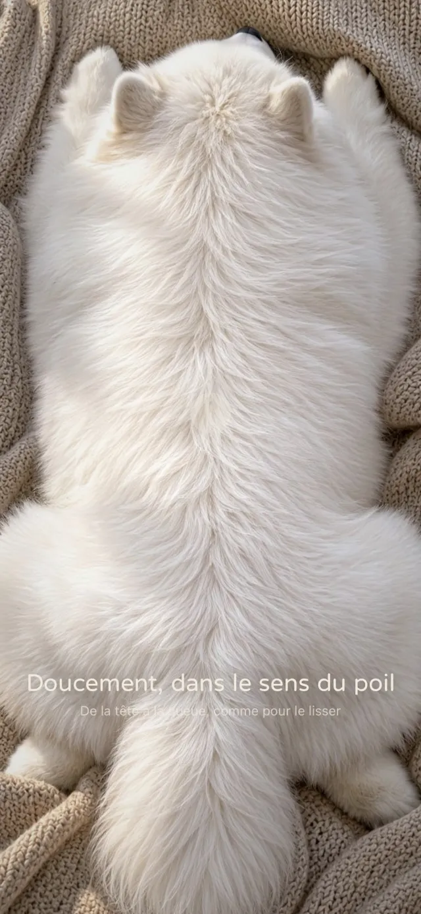
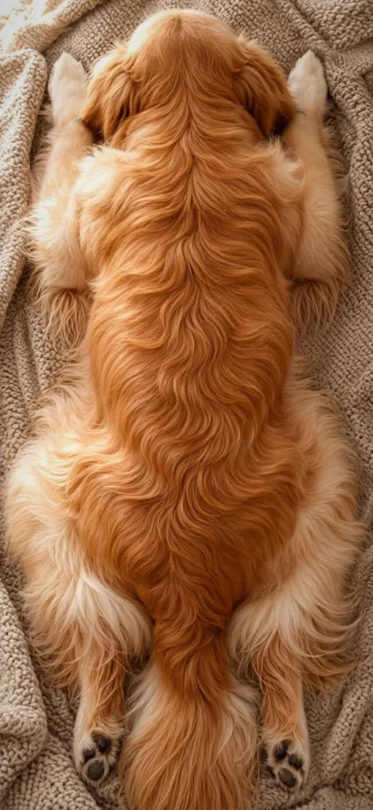
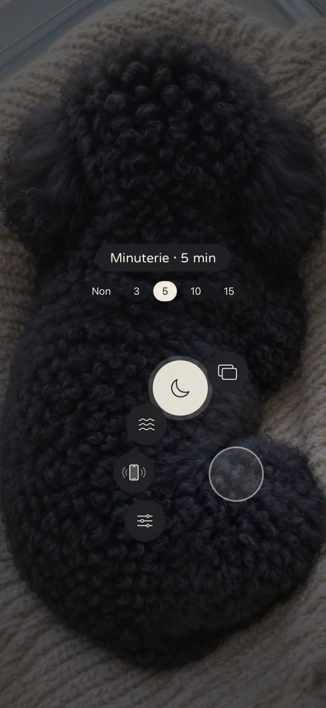
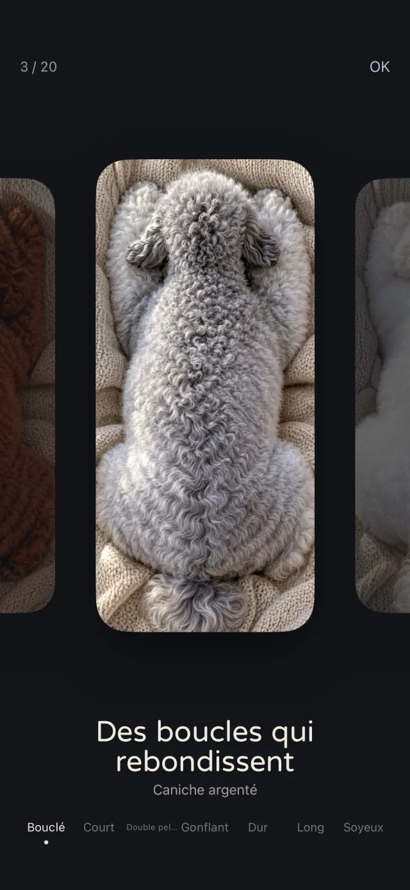

Une application iPhone apaisante pour le soir
Caressez un chien endormi
pour ralentir le rythme.
Caressez lentement dans le sens du poil. Le poil se couche sous votre doigt et se redresse doucement quand vous le relâchez. En continuant, la respiration du chien ralentit jusqu'à ce qu'il dorme profondément.
Télécharger sur l'App Store- ✓ 20 chiens, 7 types de poil
- ✓ Pas de score, de tâche ni de nourrissage
- ✓ Aucun compte nécessaire

Toucher
Le poil bouge vraiment
Caressez dans le sens du poil : il se couche vers votre doigt, puis se redresse lentement. À rebrousse-poil, il se hérisse un moment avant de retomber. Les boucles rebondissent, les poils longs suivent la main, les poils courts restent lisses.

Menu
Gardez le doigt immobile et le menu s'ouvre près du pouce
Pendant que vous caressez, l'écran n'affiche rien. Pour changer de chien ou régler le minuteur, gardez le doigt immobile 0,8 seconde : cinq boutons s'ouvrent à côté du pouce. Glissez vers l'un d'eux sans lever le doigt, puis relâchez.

Chiens
20 chiens, à découvrir un par un
Le caniche noir, le poil court café au lait, le Shiba Inu, le Samoyède et le golden retriever sont gratuits. Les 15 autres sont réservés aux membres : vous pouvez en essayer un pendant 20 secondes, ou regarder une publicité pour le caresser pendant la journée.

Coucher
Quand le chien s'endort, vous êtes tout près de vous endormir aussi
Après environ une minute de caresses lentes, le chien dort profondément et l'écran s'assombrit. Si le minuteur est activé, la respiration s'estompe et l'écran devient noir à la fin du temps réglé. Touchez une fois l'écran pour revenir.
▲ Aucun bouton à l'écran pendant que vous caressez.
Utile dans ces moments
- Au lit, avant de dormir
- Quand les pensées s'agitent
- En attendant le bus ou dans une file
- Quand votre propre chien vous manque
Détails
| Chiens | 20 (5 gratuits) |
|---|---|
| Poil | 7 types : bouclé, ras, double pelage, dressé, rêche, long, soyeux |
| Son | Une respiration très discrète uniquement, désactivable |
| Vibrations | Une légère vibration de temps en temps quand le chien réagit, désactivable |
| Compte | Aucun nécessaire |
| Prix | Gratuit avec publicités ; le statut de membre est un achat unique |
| Configuration requise | iPhone sous iOS 17 ou version ultérieure |
Les publicités apparaissent uniquement en bas de la page de choix des chiens et des réglages. L'écran de caresses n'affiche jamais de publicité.
Version gratuite
- 5 chiens
- Minuteur de sommeil, bruit de respiration et vibrations
- Publicités en bas de la page de choix des chiens et des réglages
- Possibilité de regarder une publicité pour caresser un chien verrouillé pendant la journée
Membre (achat unique)
- Les 20 chiens
- Aucune publicité
- Les chiens ajoutés plus tard sont inclus
- Restauration avec le même compte Apple sur un nouvel iPhone